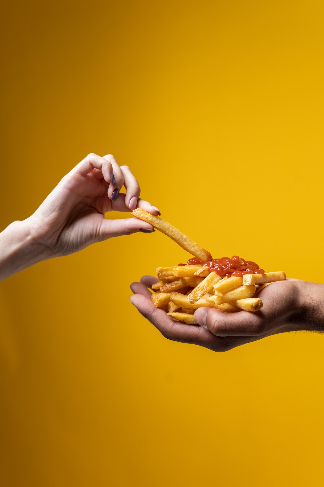
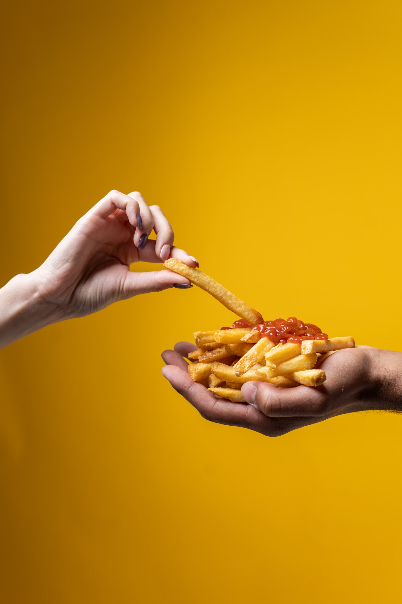

Köstliches Tiramisu
Das italienische Dessert Tiramisu erfreut sich überall großer Beliebtheit.So auch bei uns.
Deshalb haben wir dieses absolut gelingsichere Original-Rezept für Sie
als Rezept des Tages ausgewählt.
Lust auf was Neues?


Pommes - lecker aber ungesund?
Außen knusprig, innen locker - so schmecken Pommes am besten.
"Fritten" sind beliebt, aber relativ ungesund.
Gesünder als Industrieware sind selbst gemachte Pommes aus
Kartoffeln oder Süßkartoffeln. 
"Fritten" sind beliebt, aber relativ ungesund.
Gesünder als Industrieware sind selbst gemachte Pommes aus
Kartoffeln oder Süßkartoffeln. 